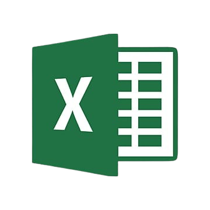

Hello,I AM Ani Cahyani
I am an enthusiastic and dedicated individual, always eager to learn new things and ready to contribute. With a strong desire to grow, I am seeking opportunities to gain valuable work experience and further enhance my skills in this field.
About Me
Halo, saya Ani Cahyani, seorang lulusan baru dari SMK dengan jurusan Rekayasa Perangkat Lunak (RPL). Meskipun masih dalam tahap mengembangkan keterampilan, saya memiliki pengetahuan dasar dalam beberapa bahasa pemrograman dan teknologi pengembangan perangkat lunak. Saya sangat tertarik untuk terus belajar dan berkembang, tidak hanya dalam bidang teknologi tetapi juga dalam berbagai hal lainnya. Saya percaya bahwa kemampuan untuk beradaptasi dengan cepat adalah kunci untuk sukses, dan saya selalu siap menghadapi tantangan baru. Sebagai seorang fresh graduate, saya mencari kesempatan untuk menerapkan pengetahuan yang saya miliki dan terus belajar dari pengalaman profesional. Saya yakin dengan semangat untuk belajar dan kemauan untuk beradaptasi, saya dapat berkembang dan memberikan kontribusi positif di dunia kerja.
My Skills


- 